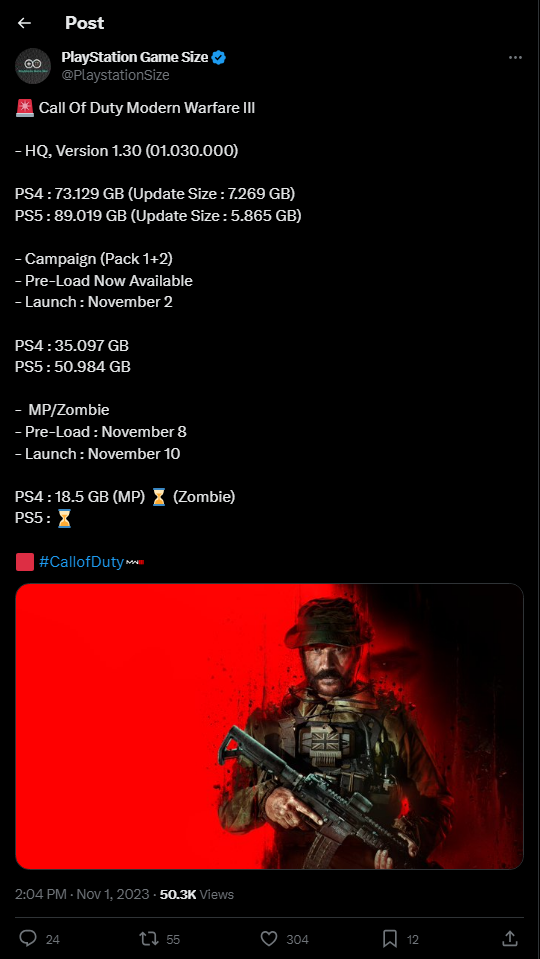

Alan Wake 2 deja maravillada a la crítica

Ya tenemos aquí los análisis de Alan Wake 2, y parece que Remedy Entertainment lo ha vuelto a hacer. Trece largos años después del lanzamiento de la primera entrega y la espera ha merecido la pena. En el momento de escribir estas líneas, la media de Metacritic para la versión de PS5 es de un pasmoso 89%. En PC es incluso mejor, con un total del 92%. OpenCritic, por su parte, también presume de un impresionante 92%. ¿Por qué? Pues por lo visto, Alan Wake 2 tiene una calidad gráfica de aúpa, un estilo narrativo magistral y una atmósfera que te dejará sin dormir de puro terror.
- IGN: 9/10
- GamesRadar+: 5/5
- Meristation: 9/10
- HobbyConsolas: 95%
- 3DJuegos: 8/10
- VGC: 5/5
- Gamespot: 10/10
- VG247: 5/5
- Wccftech: 9/10
Esto es lo que está por llegar a Lords of the Fallen
HEXWORKS acaba de desvelar los distintos contenidos extra gratuitos que llegarán a Lords of the Fallen través de varias actualizaciones. Eso sí, todavía no sabemos cuando.
- Conjuntos de armaduras y misiones de Ubral, Rhogar y Radiant.
- Dos nuevos paquetes de hechizos
- Dos expansiones de inventario
- Jefes secretos, armas y habilidades adicionales
- Nuevos golpes
- Reasignación de los controles del mando
- Equilibrio PvP y PvE
- Modificadores de Nuevo Juego+.
Xbox anuncia una colaboración con Inworld AI para crear contenidos de juego mediante inteligencia artificial
Microsoft acaba de anunciar una colaboración de varios años con la empresa estadounidense Inworld AI. Inworld AI está detrás del motor "Inworld", utilizado para crear personajes no jugadores (PNJ) mediante inteligencia artificial.
Gracias a estas herramientas, los estudios propiedad de Xbox podrán diseñar personajes, historias e incluso misiones basadas en la IA. Mediante este proceso se podrán crear guiones detallados, diálogos con varias ramas y líneas de misión. Cabe destacar que esta herramienta a disposición de los desarrolladores será opcional y utilizarla será una decisión creativa.El remake de Silent Hill 2 tendrá un capítulo centrado en los orígenes de Pyramid Head
Aunque todavía no sabemos cuando saldrá, el remake de Silent Hill 2 ya ha hecho acto de presencia en la mayoría de tiendas online, y en Best Buy, la descripción del juego viene con un detalle la mar de interesante.
Por lo visto, habrá una secuencia completamente nueva que tendrá que ver con los orígenes de Pyramid Head. Algunos ya suponen que podría ser algo similar a "Born from a Wish**, un capítulo extra que venía con Silent Hill 2 Director's Cut y en el que nos poníamos en la piel de María.Blizzard no descarta la llegada a consolas de World of Warcraft
Desde 2004, World of Warcraft ha sido el rey de los MMORPG en PC. Eso sí, a pesar de este éxito, Blizzard nunca ha intentado llevar su gallina de los huevos de oro a otras plataformas.
En una breve entrevista con GamesRadar, Holly Longdale, vicepresidenta y productora ejecutiva del juego, afirmó que ella y sus equipos hablan "constantemente" de una versión para consolas."Tenemos estas tres expansiones y estamos muy entusiasmados con ellas. Pero, sí, por supuesto. Sería falso decir que no hablamos de ello (de la versión para consola)... por supuesto que lo hacemos".
La campaña de Call of Duty: Modern Warfare III puede requerir hasta 140 GB de descarga
Como todos sabemos, los FPS de Activision siempre han tendido a ocupar mucho espacio en nuestros SSD y discos duros. Esta tradición continúa con el lanzamiento de Call of Duty: Modern Warfare III.
Ya disponible en acceso anticipado, el juego para un jugador requiere la aplicación básica Call of Duty HQ para ejecutarse. Tiene un tamaño aproximado de 73 GB en PS4 y 89 GB en PS5. Además de eso, los jugadores necesitan hacer una descarga adicional de 51GB en PS5 y 35GB en PS4, solo para la nueva campaña. Esto significa que los propietarios de PlayStation 5 pueden tener hasta 140GB de datos que descargar para poder jugar. Pero ahí no acaba la cosa, puesto que el total que puede aumentar hasta los 235GB cuando se añaden el multijugador, el modo 'Zombis' y Warzone. 